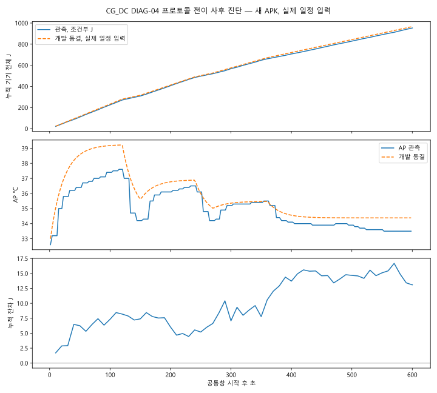
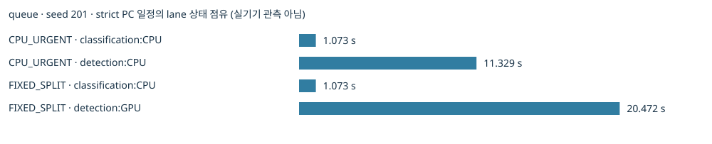

새 APK의 DIAG-04 1세션을 과거 개발3세션 동결 모형에 사후 적용했습니다. 실행된 블록 상태·전환 시각과 관측 시작 AP 32.6°C를 예측 입력으로 사용했습니다. 미래 일정 자체를 예측하지 않았습니다. 확인 결과를 본 뒤의 분석이며 독립 사전등록 평가나 정확도 PASS가 아닙니다.
기존 개발3·DC_DG 확인 · 전이 결과 JSON · 구간 잔차 CSV · 에너지 경로 CSV · AP 경로 CSV · 재현·지원 범위
| 자료 역할 | 조건 | 관측 J | 예측−관측 J | AP 경로 MAE °C | AP 최고 예측−관측 °C |
|---|---|---|---|---|---|
| 기존 개발 적합 | CC_DG, CG_DC, DC_DG | 3세션·동결 파일 SHA 35ed6987b1fc…; 독립 확인 아님 | |||
| 기존 확인 | DC_DG | 960.954 | 4.550 | 0.645 | -0.035 |
| 새 프로토콜 전이 | CG_DC | 953.069 | 13.121* | 0.834 | 1.612 |
*전이의 공통창 600.098초 중 상태 매핑 600.090초에서만 비교: 관측 953.055J·예측 966.176J. 미매핑 0.008초의 관측 0.013J를 예측 0으로 채우지 않았습니다. 전체 관측은 953.069J입니다. 기존 평가 함수의 전체 관측 대비 잔차 13.108J와 경계가 다릅니다.

| 구간 | 상태 | 초 | 관측 J | 예측 J | 잔차 J | AP MAE °C |
|---|---|---|---|---|---|---|
| pair | classification_GPU+detection_CPU | 120.222 | 271.440 | 279.759 | 8.320 | 1.777 |
| idle_1 | resident_idle | 30.055 | 37.890 | 36.830 | -1.060 | 1.447 |
| solo_b | detection_CPU | 90.134 | 175.924 | 174.133 | -1.791 | 0.752 |
| idle_2 | resident_idle | 30.067 | 35.597 | 36.845 | 1.248 | 0.547 |
| solo_a | classification_GPU | 90.023 | 140.924 | 145.009 | 4.085 | 0.214 |
| idle_tail | resident_idle | 120.080 | 144.365 | 147.151 | 2.786 | 0.432 |
| post_work_wait | resident_idle | 119.508 | 146.915 | 146.449 | -0.466 | 0.727 |
계산 가능: 동일 A24·두 exact 모델/입력·네 resident runtime·CPU 1 thread에서 이 CG_DC의 실제 600초 블록 일정과 개발 시작 AP 범위 32.5–34.0°C가 주어진 조건부 사후 진단. 계산된 오차는 프로토콜 변경의 한 세션 사례다.
계산 불가: 임의 도착·짧은 병행·큐/callback 전력·다른 초기 AP·CC_DG 새 프로토콜 확인·배터리 온도/잔량·throttling. 기존 합성 정책 화면의 에너지/AP 수치는 별도 탐색 가정이다. 새 동결 profile을 그 엔진에 넣으면 수치 대신 UNSUPPORTED_ARRIVAL_STATE_TRANSITIONS를 반환한다.
사전 고정한 queue·seed 201·strict 24요청의 CPU_URGENT/FIXED_SPLIT 일정입니다. 실기기 수집이 아니며 에너지·AP 예측값을 생성하지 않습니다. 상태별 초·구간 수 CSV · 입력 해시·가정.

이 일정에서 FIXED_SPLIT의 분류 CPU＋탐지 GPU 병행 구간은 없었습니다. 짧은 단독 실행은 1초 전류·약 2.65초 AP 표본에서 상태별 계수를 분리할 근거가 아닙니다. 기존 120초 공통창에는 긴 완료 후 유휴가 포함됩니다. 동결 모형의 임의 도착 지원은 계속 불가입니다.
J는 A24 raw=mA 조건부 기기 전체 소비이며 절대 정확도 미인증입니다. AP는 mType=0 센서이며 BAT·표면 온도·안전 한도가 아닙니다. 30°C 초과시간은 기존 연구용 지표로, 양쪽 유효 AP 구간 596.690초에서 오차 0.000초입니다. 전체 600초의 한도 준수 증명이 아닙니다.